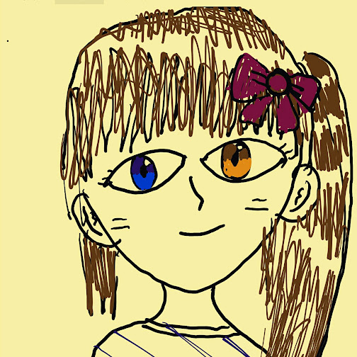

SERVER / BACKEND DEVELOPER
C/C++과 Java 기반의 서버 개발 경험을 바탕으로 통신 플랫폼, 과금 시스템, 관제 시스템, 금융 데이터 처리 시스템 등 장기간 운영되는 서버 시스템을 개발해 왔습니다.
최근에는 기존 서버 개발 경험을 Spring Boot 기반 REST API, DB 설계, 인증, 배포 구조로 확장하며 백엔드 개발 역량을 강화하고 있습니다.